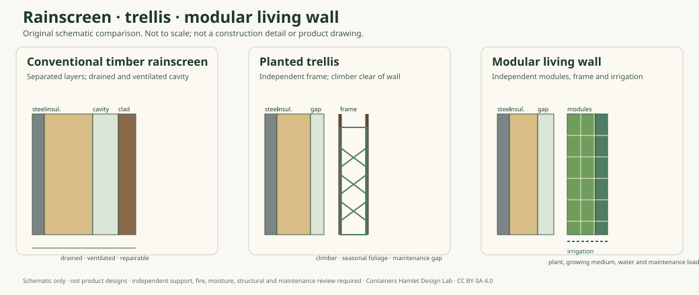

Four reusable systems: a freestanding climbing-plant trellis, a modular living wall, an edible herb and perennial planter wall, and an evergreen privacy screen. They are shown on one-, two- and three-container concepts and the common lodge. Planted structures are independently supported wherever practical; none is a substitute for the rainscreen, insulation or structural design.
No energy savings, privacy score, carbon figure or code compliance is claimed. Supplier pages describe products and claims; independent building science and a project-specific review are still required.
Four systems
Freestanding climbing-plant trellis
A separate frame with climbers, held away from the rainscreen.
Benefits
Seasonal shade and a green edge.
Can screen a window or porch without using interior space.
Repairable and replaceable independent frame.
Limitations
Climbers need pruning, ties and a safe maintenance route.
Roots and moisture must stay out of the wall and foundation.
Fire, structural fixing and plant selection need review.
Open questions
Which native or non-invasive climber suits the exposure and soil?
Who prunes and inspects the frame?
How is the frame anchored without loading the container?
Modular living wall
Modular planted panels on an independent frame, with irrigation and drainage.
Benefits
High visual density in a small footprint.
Modules can be replaced individually.
Can shade a west or south façade.
Limitations
Water, growing medium and plants add load and maintenance.
Irrigation leaks, freeze-thaw, fire and electrical services need design.
What is the fire classification of the module and growing medium?
How is irrigation water contained and drained?
What is the replacement and maintenance access strategy?
Edible herb and perennial planter wall
Planter modules for herbs, strawberries and perennials at accessible heights.
Benefits
Food and education close to the kitchen.
Accessible working height.
Seasonal interest and pollinator habitat.
Limitations
Frequent watering, feeding and replanting.
Contaminants, food safety and accessibility need attention.
Planter load and brackets need structural review.
Open questions
Is the water supply frost-free and safe?
Who maintains the crop and replaces soil?
How are reach, drainage and overflow resolved?
Evergreen privacy screen
An independently supported evergreen screen, clear of the building and services.
Benefits
Year-round visual screening.
Wind buffering and habitat.
Can define an outdoor room.
Limitations
Slow establishment and eventual root volume.
Height, bylaw, fire and utility clearance need checking.
No privacy score is calculated.
Open questions
Is the species native, climate-appropriate and non-invasive?
What is the root barrier and utility clearance?
Who prunes and replaces the screen?
Rainscreen, trellis and living wall

Original schematic, not to scale. The conventional rainscreen is a wall assembly; the trellis and living wall are independent outdoor structures with their own supports, water and maintenance needs.
Examples by design
The four systems are distributed across one-, two- and three-container concepts and the common lodge. Open a design for its five-view gallery and seasonal views.
Recorded vegetation systems by Design Lab concept. Not every design uses every system.
Freestanding climbing-plant trellis, Modular living wall, Edible herb and perennial planter wall, Evergreen privacy screen
What is supported, and what is not
Evidence posture for claims in this Design Lab. This is a design prompt, not a literature review or a product certification.
Claim
Evidence posture
Exterior insulation can reduce thermal bridging and keep the steel shell warmer when detailed continuously.
Supported by general building-science principles; project-specific condensation and fire performance still require engineering analysis.
A drained, ventilated rainscreen can support drying and reduce rain penetration.
Broadly supported as a principle; the actual assembly, climate, exposure and detailing determine performance.
Vegetation can shade glazing and provide visual screening.
Plausible and visually demonstrable; the amount depends on species, season, growth, maintenance and placement. No energy or privacy score is calculated.
Independent supports keep planting loads off the container shell.
A sound design principle where the independent frame, footings and connections are engineered; the editor does not engineer them.
A specific assembly is moisture-safe or code-compliant.
Not supported. This requires project-specific building-envelope, fire and code analysis.
A living wall saves a stated amount of energy or carbon.
Not supported here. No energy, carbon or life-cycle figure is invented.
A privacy screen achieves a privacy score.
Not supported. No privacy score is calculated.
Sources and supplier claims
Supplier pages are useful for understanding proprietary systems, but their performance and sustainability claims are not independently verified here. The building-science references discuss moisture, insulation and enclosure principles; they are not reviews of these designs.